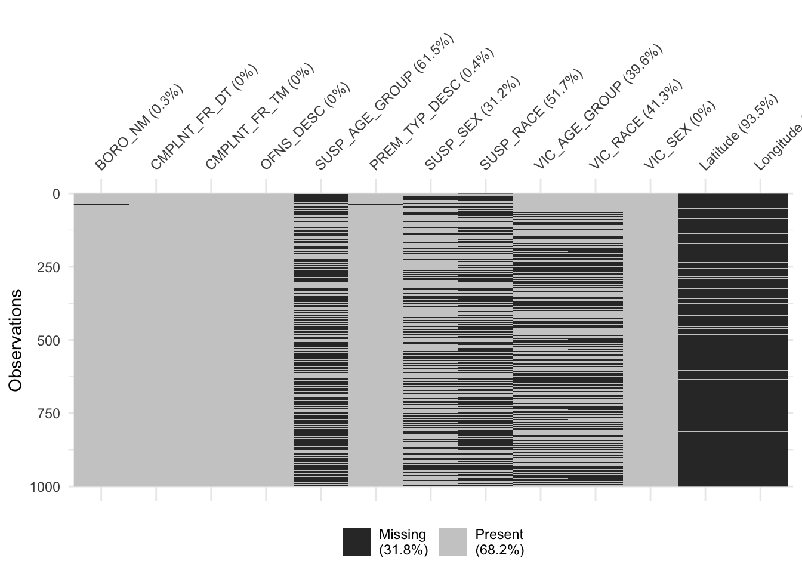
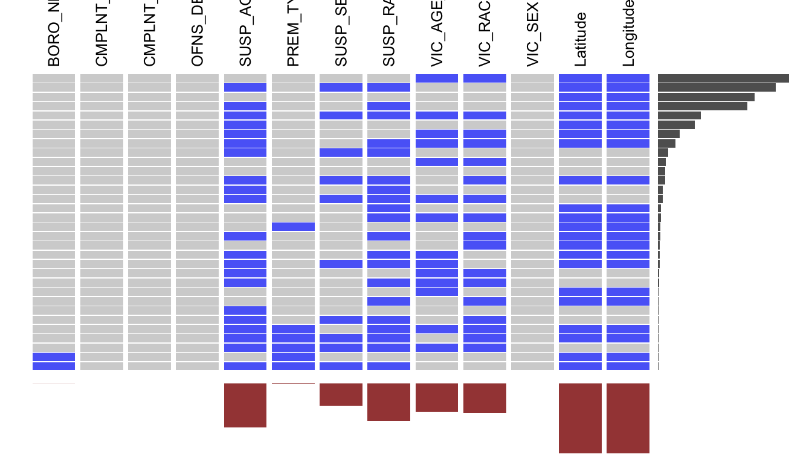

Chapter 4 Missing values
df_cols <- colnames(df_select)
df <- df_select %>%
mutate(CMPLNT_FR_DT=as.Date(CMPLNT_FR_DT, "%m/%d/%Y")) %>%
filter(CMPLNT_FR_DT >= as.Date("01/01/2018", "%m/%d/%Y")) %>%
sample_n(1000)
#df <- df %>% select(-timerange, -color, -crimecolor)
df <- df %>% mutate(SUSP_AGE_GROUP = ifelse(SUSP_AGE_GROUP == "UNKNOWN", NA, SUSP_AGE_GROUP))
df <- df %>% mutate(SUSP_RACE = ifelse(SUSP_RACE == "UNKNOWN", NA, SUSP_RACE))
df <- df %>% mutate(VIC_AGE_GROUP = ifelse(VIC_AGE_GROUP == "UNKNOWN", NA, VIC_AGE_GROUP))
df <- df %>% mutate(VIC_RACE = ifelse(VIC_RACE == "UNKNOWN", NA, VIC_RACE))We have randomly sampled 1000 data to analysis the missing value pattern of the dataset after we have cleaned the data. We have also changed the “UNKNOWN” entry to NA.
vis_miss(df)
From the plot above, we see that majority of missing data came from the columns: “SUSP_AGE_GEOUP”, “SUSP_SEX”, “SUSP_RACE”, “VIC_AGE_GROUP”, “VIC_RACE”, “Latitude”, and “Longitude”. We also see that “Latitude”, and “Longitude” are always missing together.
df$CMPLNT_FR_DT <- as.character(df$CMPLNT_FR_DT)
df$CMPLNT_FR_TM <- as.character(df$CMPLNT_FR_TM)
names(df) <- df_cols
x <- missing_data.frame(df)## NOTE: In the following pairs of variables, the missingness pattern of the second is a subset of the first.
## Please verify whether they are in fact logically distinct variables.
## [,1] [,2]
## [1,] "SUSP_AGE_GROUP" "SUSP_SEX"summary(x@patterns) ## nothing
## 10
## SUSP_AGE_GROUP
## 5
## VIC_AGE_GROUP
## 1
## VIC_AGE_GROUP, VIC_RACE
## 19
## Latitude, Longitude
## 144
## SUSP_AGE_GROUP, SUSP_RACE
## 10
## SUSP_AGE_GROUP, Latitude, Longitude
## 50
## PREM_TYP_DESC, Latitude, Longitude
## 1
## SUSP_RACE, Latitude, Longitude
## 10
## SUSP_AGE_GROUP, SUSP_SEX, SUSP_RACE
## 17
## SUSP_AGE_GROUP, SUSP_RACE, VIC_RACE
## 2
## SUSP_AGE_GROUP, VIC_AGE_GROUP, VIC_RACE
## 1
## VIC_RACE, Latitude, Longitude
## 4
## VIC_AGE_GROUP, Latitude, Longitude
## 2
## SUSP_AGE_GROUP, SUSP_RACE, Latitude, Longitude
## 160
## VIC_AGE_GROUP, VIC_RACE, Latitude, Longitude
## 186
## SUSP_AGE_GROUP, VIC_RACE, Latitude, Longitude
## 4
## BORO_NM, PREM_TYP_DESC, Latitude, Longitude
## 1
## SUSP_AGE_GROUP, SUSP_SEX, SUSP_RACE, Latitude, Longitude
## 190
## SUSP_RACE, VIC_AGE_GROUP, VIC_RACE, Latitude, Longitude
## 3
## SUSP_AGE_GROUP, VIC_AGE_GROUP, VIC_RACE, Latitude, Longitude
## 43
## SUSP_AGE_GROUP, SUSP_RACE, VIC_RACE, Latitude, Longitude
## 9
## SUSP_AGE_GROUP, SUSP_SEX, SUSP_RACE, VIC_AGE_GROUP, VIC_RACE
## 6
## SUSP_AGE_GROUP, SUSP_RACE, VIC_AGE_GROUP, Latitude, Longitude
## 2
## SUSP_AGE_GROUP, PREM_TYP_DESC, SUSP_RACE, Latitude, Longitude
## 1
## SUSP_AGE_GROUP, SUSP_RACE, VIC_AGE_GROUP, VIC_RACE, Latitude, Longitude
## 33
## SUSP_AGE_GROUP, SUSP_SEX, SUSP_RACE, VIC_AGE_GROUP, Latitude, Longitude
## 1
## SUSP_AGE_GROUP, SUSP_SEX, SUSP_RACE, VIC_RACE, Latitude, Longitude
## 7
## SUSP_AGE_GROUP, PREM_TYP_DESC, SUSP_SEX, SUSP_RACE, Latitude, Longitude
## 1
## BORO_NM, SUSP_AGE_GROUP, PREM_TYP_DESC, SUSP_SEX, SUSP_RACE, Latitude, Longitude
## 1
## SUSP_AGE_GROUP, SUSP_SEX, SUSP_RACE, VIC_AGE_GROUP, VIC_RACE, Latitude, Longitude
## 75
## SUSP_AGE_GROUP, PREM_TYP_DESC, SUSP_RACE, VIC_AGE_GROUP, VIC_RACE, Latitude, Longitude
## 1#image(x)We can further investigate the missing row patterns by using the missing_data.frame function, and we found out that there are 30 different row missing patterns. Some of the patterns only have one or two ocurrences and 20 of them have 10 ocurrences or below.
We can check how many time each of the row missing pattern appears in the data set by the following and also visualize these row missing patterns with visna function.
visna(df, sort='r')
By using the visna function, we observed the following missing row patterns:
- The pattern that occurs the most is missing both Latitude and Longitude, which is about 91.5% of the data.
- The information of the suspect are missing such as age, sex, and race tends to be missing along with some other variables.
Since the objective of our project is to analysis the safty issue, when doing the interative part of the project, we will need to use the location information. So we have to drop all the data with Longitude and Latitude missing when we do that. This might affect the distribution of the crime, so we plotted the following diagram to compare the distribution of crime type before and after when location is removed.
p1 <- ggplot(df_select, aes(x=OFNS_DESC, y=..count..)) +
geom_bar() +
xlab("Crime Type")+
ylab("Number of Crimes")+
labs(title="Count by crime type")
df_locationNA_dropped <- df_select %>% drop_na(Latitude)
p2 <- ggplot(df_locationNA_dropped, aes(x=OFNS_DESC, y=..count..)) +
geom_bar()+
xlab("Crime Type")+
ylab("Number of Crimes")+
labs(title="Count by crime type with location NA dropped")
grid.arrange(p1, p2, ncol = 1)
Base on the above two plots, we see that after we have removed all the data that are missing location, the distribution of the crime type is unchanged. So, the missing of location is somewhat random and we are safe to remove it when doing the interactive part. However, before the interactive part, we will keep the records without longtitude and latitude in order to preserve more information of our dataset.